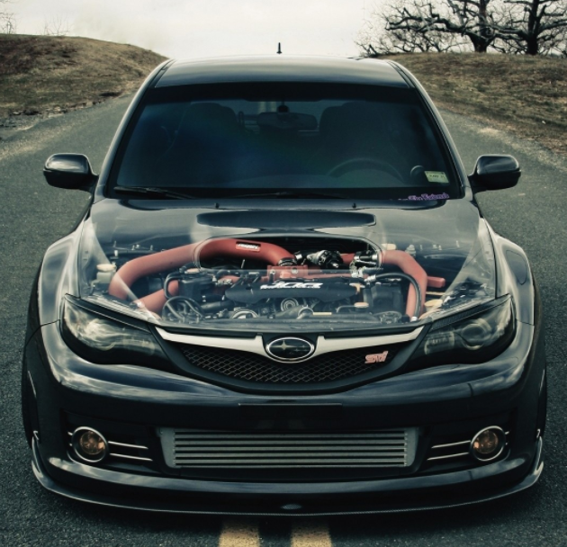
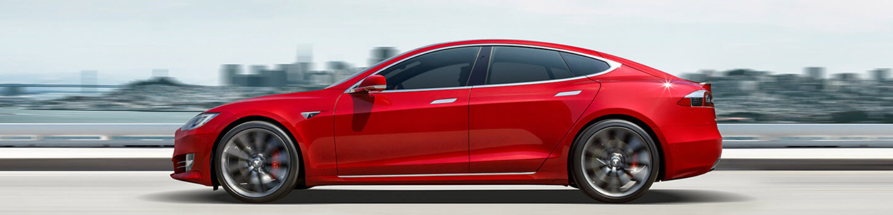

 Zelf ben ik nog niet een fan van elektrische auto's. De techniek die ervoor wordt ontwikkeld is geweldig en het is ook heel erg knap dat de ontwikkeling zo snel gaat van deze auto's, maar ik heb toch liever een normale auto met een benzinemotor. Als autofanaat wil ik graag een auto met een eigen karakter, een karakter dat ontstaat door het geluid van de auto, hoe die rijdt of hoe de auto voelt terwijl je in de auto rijdt en dat gevoel heb ik niet met elektrische auto's. Persoonlijk vind ik elektrische auto's niet veel meer dan een computer op wielen. Er is geen manier om een band te krijgen met een elektrische auto zoals je dat kan met een benzineauto, alles wordt voor je gedaan en afgezien van een radio zit er ook geen geluid in.
Wat er op dit moment gebeurt in de wereld van elektrische auto's en hoe snel de ontwikkelingen gaan is heel erg indrukwekkend, maar ik heb toch liever een benzineauto.
